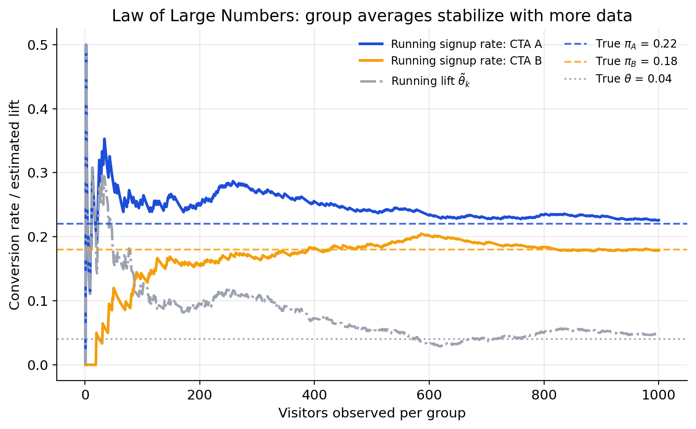
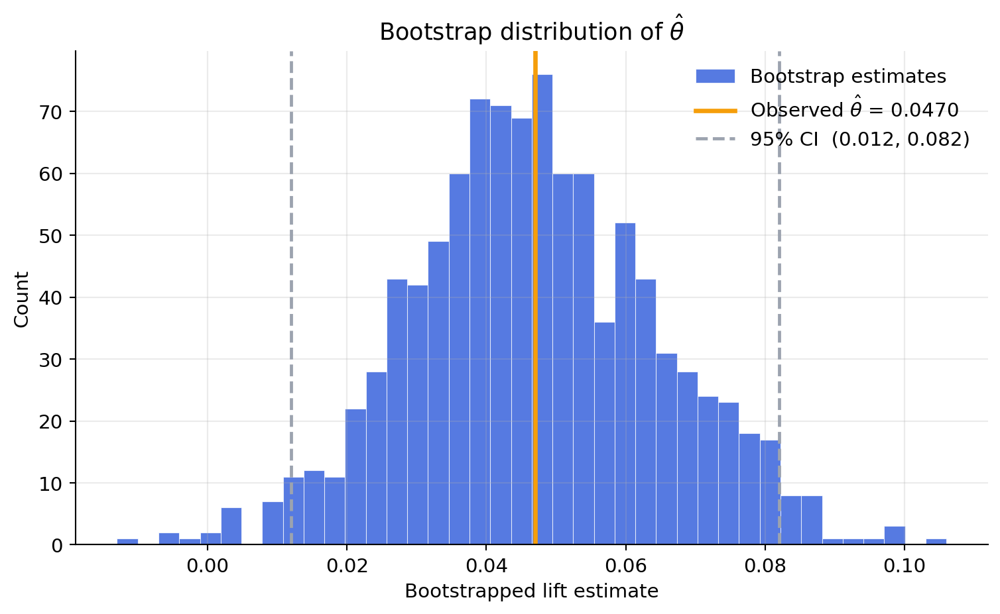
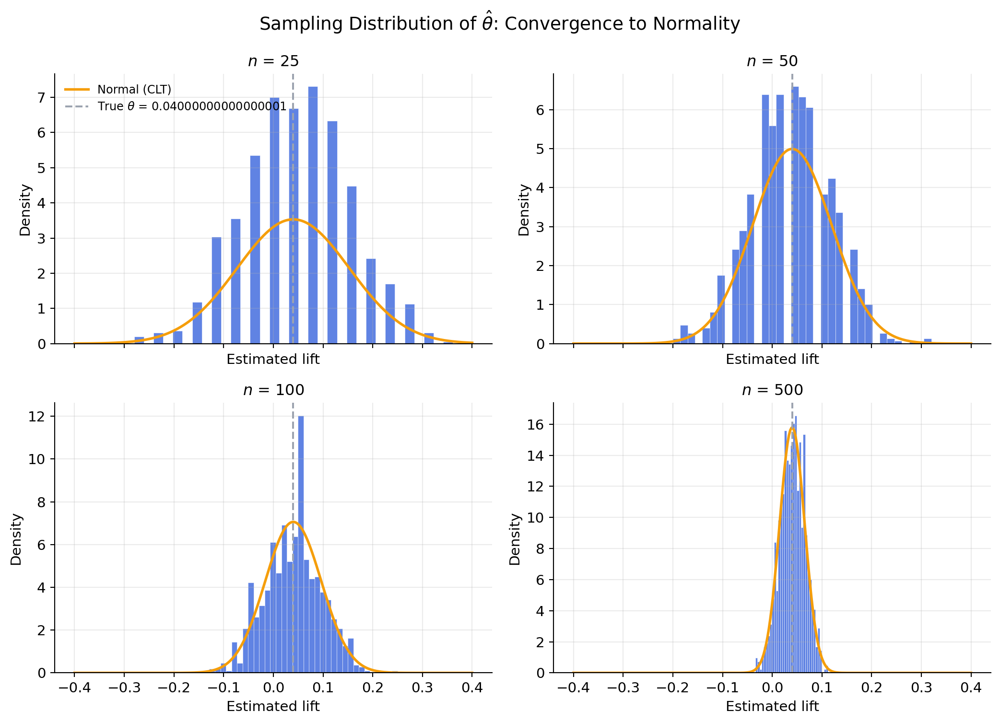
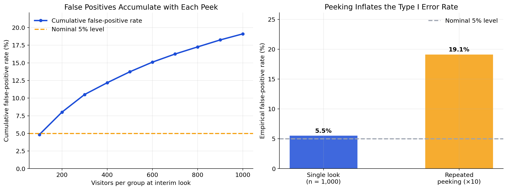

Simulating Key Ideas from Classical Frequentist Statistics
Author
Anissa Chan
Published
April 23, 2026
1 Introduction
On my website homepage, I ask visitors to sign up for a newsletter. That little prompt might look like a minor design choice, but in practice the wording of a call to action (CTA) can change how many people convert. In this post I compare two versions of the same prompt:
CTA A: “Sign up for our newsletter here!”
CTA B: “Stay up to date by signing up!”
The business question is simple: which CTA generates more sign-ups? The right way to answer it is not to rely on instinct, but to run an A/B test. In an A/B test, incoming visitors are randomly assigned to see one version or the other. Because the assignment is random, any difference in conversion rates can be attributed to the CTA itself rather than to who happened to visit the site.
What makes this a useful example is that it also illustrates the core ideas of classical frequentist statistics. We will simulate a clean A/B test, estimate the treatment effect, study how that estimator behaves as the sample grows, quantify uncertainty with the bootstrap, connect the result to the Central Limit Theorem, and finish with hypothesis testing and the dangers of peeking at results too early.
2 The A/B Test as a Statistical Problem
For each visitor, the outcome is binary: either they sign up for the newsletter or they do not. That means each observation can be modeled as a draw from a Bernoulli distribution with parameter \(\pi\), the probability of signing up.
Because the CTA may affect behavior, we allow that probability to differ by group. If a visitor sees CTA A, their outcome is a Bernoulli random variable with parameter \(\pi_A\). If they see CTA B, their outcome is a Bernoulli random variable with parameter \(\pi_B\).
The quantity we care about is the difference in sign-up rates,
\[
\theta = \pi_A - \pi_B.
\]
A positive value of \(\theta\) means CTA A performs better; a negative value means CTA B performs better. Our estimator is the difference in sample means,
\[
\hat\theta = \bar X_A - \bar X_B.
\]
Because each observation is either 0 or 1, the sample mean is just the sample proportion of sign-ups. So in this setting \(\bar X_A = \hat\pi_A\) and \(\bar X_B = \hat\pi_B\). The estimator \(\hat\theta\) is therefore the observed lift in conversion rate between the two CTAs.
3 Simulating Data
In a real experiment we would not know the true values of \(\pi_A\) and \(\pi_B\). That is exactly why we would run the test in the first place. For this post, though, simulation is useful because it lets us choose the truth ourselves and then check whether our statistical tools recover it.
I set \(\pi_A = 0.22\) and \(\pi_B = 0.18\), so the true treatment effect is
\[
\theta = 0.22 - 0.18 = 0.04.
\]
That means CTA A is truly better by 4 percentage points. I then simulate 1,000 visitors in each group.
In this simulated experiment, CTA A converted 22.6% of visitors and CTA B converted 17.9%. The estimated lift was 4.7%, which is close to the true effect of 4.0% but not identical to it—exactly what we should expect from random sampling.
4 The Law of Large Numbers
The Law of Large Numbers (LLN) says that as the sample size grows, the sample mean converges to the population mean. In the A/B testing setting, that means the cumulative conversion rate within each group should settle down near its true probability, and the difference between those cumulative rates should settle down near the true treatment effect.
To show that, I track the running conversion rate for CTA A and CTA B separately. After the first \(k\) visitors in each group, the running treatment effect is just the difference between the two cumulative sample conversion rates,
running_pi_A = np.cumsum(cta_a) / np.arange(1, n +1)running_pi_B = np.cumsum(cta_b) / np.arange(1, n +1)running_theta = running_pi_A - running_pi_B

At the beginning of the experiment, the running rates move around a lot because a few extra sign-ups can change the estimate substantially. As more visitors arrive, both group averages settle down: CTA A stabilizes near 0.22, CTA B stabilizes near 0.18, and their difference settles near the true lift of 0.04. That is exactly the LLN in action.
This is the first major promise of frequentist inference: repeated sampling gives us a principled way to think about how close our estimators should be to the truth.
5 Bootstrap Standard Errors
Once we have a point estimate, the next question is precision. A lift estimate of 4 or 5 percentage points is much more convincing when it comes with a small standard error than a large one. This is where the bootstrap becomes useful.
The bootstrap is a resampling method. Instead of deriving the variability of \(\hat\theta\) from theory alone, we repeatedly resample from the observed data—with replacement—recompute the estimator on each bootstrap sample, and use the spread of those resampled estimates as an approximation of the standard error.
The plot below shows the distribution of those 1,000 bootstrapped estimates. A good bootstrap distribution should be approximately bell-shaped and centered on the observed estimate.

Quantity
Value
Observed lift ($\hat{\theta}$)
0.0470
Bootstrap standard error
0.0179
Analytical standard error
0.0179
95% CI lower bound
0.0120
95% CI upper bound
0.0820
The bootstrap standard error is 0.0179, while the analytical standard error is 0.0179. They are very close, which is reassuring: the resampling approach and the Bernoulli formula are telling essentially the same story about uncertainty. Using the bootstrap standard error, the 95% confidence interval for the treatment effect is (0.0120, 0.0820). In practical terms, this interval says that the data are consistent with CTA A improving the sign-up rate by somewhere between 1.2% and 8.2%.
The important interpretation point is that the parameter itself is fixed, not random. The random object is the interval-producing procedure. A 95% confidence interval is a method that would cover the true effect 95% of the time if we repeated the experiment many times under the same conditions.
6 The Central Limit Theorem
The Central Limit Theorem (CLT) says that the sampling distribution of a sample mean becomes approximately Normal as the sample size gets large, regardless of the shape of the underlying population distribution. Since our estimator is the difference between two sample means, the same logic applies here.
That result is especially useful because the raw data in this problem are not Normal at all—they are Bernoulli variables that take only the values 0 and 1. Even so, the average of many such observations behaves more and more like a bell-shaped random variable.
To illustrate that, I repeated the A/B experiment 1,000 times for each of four sample sizes: \(n \in \{25, 50, 100, 500\}\). Each time I computed \(\hat\theta = \bar X_A - \bar X_B\), then plotted the distribution of those 1,000 estimates together with the Normal curve predicted by theory.

At \(n = 25\), the histogram is rough and the Normal overlay is a poor fit. By \(n = 100\), the shape is already smooth and symmetric, and by \(n = 500\) the empirical distribution and the theoretical Normal are nearly indistinguishable. That is the CLT in action.
The practical payoff is enormous: once the sampling distribution is approximately Normal, we can use familiar z-statistics, p-values, and confidence intervals to summarize the evidence in our experiment.
7 Hypothesis Testing
A hypothesis test formalizes the question of whether the observed difference between CTA A and CTA B is large enough to count as evidence against “no effect.” Here the null and alternative are
Under the null, the two CTAs have the same true sign-up rate. To evaluate that claim, I use a large-sample Wald-style z-test, which standardizes the estimated lift by its estimated standard error:
\[
z = \frac{\hat\theta - 0}{SE(\hat\theta)}.
\]
This standardization matters for three reasons.
By the CLT, \(\hat\theta\) is approximately Normal in large samples.
Under \(H_0\), that approximate Normal distribution is centered at 0.
Dividing by the standard error converts the estimate into a unit-free quantity that is approximately standard Normal under the null, which lets us compute a p-value.
In this post I estimate that standard error directly from the two observed Bernoulli samples. That is slightly different from the pooled standard error sometimes used in an introductory two-proportion z-test, but the logic is the same: in a large sample, both approaches lead to essentially the same conclusion here.
This is often casually called a “t-test,” but in this Bernoulli setting the label is slightly misleading. The classical t-statistic has an exact t-distribution when the data are Normally distributed and the variance is estimated. Here the raw data are binary, not Normal, so there is no exact t-distribution result to lean on. What justifies the test is the CLT, which makes the statistic approximately Normal in large samples. In practice, once the sample is large, the difference between a t reference distribution and a standard Normal reference distribution is negligible.
Statistic
Value
Estimated lift
0.0470
Standard error
0.0179
z-statistic
2.6197
p-value
0.0088
The test statistic is 2.62, which corresponds to a two-sided p-value of 0.0088. At the conventional 5% level, we therefore reject the null hypothesis of no effect. In plain English: this simulated dataset provides fairly strong evidence that CTA A outperforms CTA B, and the estimated advantage is about 4.7%.
8 The A/B Test as a Regression
The same comparison can be written as a simple regression. Stack the two groups into one dataset with an outcome variable \(Y_i\) that equals 1 if visitor \(i\) signs up and 0 otherwise, and a treatment indicator \(D_i\) that equals 1 if the visitor saw CTA A and 0 if they saw CTA B. Then estimate
\(\beta_0\) is the mean outcome for the control group (CTA B), so it estimates \(\pi_B\).
\(\beta_0 + \beta_1\) is the mean outcome for the treatment group (CTA A), so it estimates \(\pi_A\).
Therefore \(\beta_1 = \pi_A - \pi_B = \theta\), which means the OLS slope coefficient is exactly the treatment effect we have been estimating all along.
Term
Estimate
Std. Error
t-statistic
p-value
Intercept (CTA B mean)
0.1790
0.0127
14.1027
0.0000
CTA A indicator
0.0470
0.0180
2.6184
0.0089
Approach
Estimate
SE
Test statistic
p-value
Two-sample test
0.0470
0.0179
2.6197
0.0088
Regression slope
0.0470
0.0180
2.6184
0.0089
The point estimates are identical, and the test statistics and p-values are essentially the same. Any small difference in the standard errors comes from the exact variance formula being used. In this binary-outcome setting, OLS is acting as a simple linear probability model, so the regression is not adding new information in the two-group case—but it is giving us a more general language.
That matters because real experiments rarely stay this simple. Once you understand the regression framing, it becomes natural to add customer covariates, interactions, multiple treatment arms, or fixed effects while preserving the same basic logic of causal comparison.
9 The Problem with Peeking
Now for the part that gets people in trouble.
Suppose my boss does not want to wait until 1,000 visitors have been assigned to each CTA. Instead, she wants to test after every 100 visitors per group and stop the experiment as soon as any interim result is significant at the 5% level. That sounds efficient, but under classical frequentist statistics it changes the error rate of the procedure.
A single hypothesis test at \(\alpha = 0.05\) has a 5% chance of a false positive when the null is true. But if we keep peeking at accumulating data, every interim look is another chance to get lucky noise that crosses the significance threshold. The overall chance of at least one false rejection can become much larger than 5%.
To show that, I simulated 10,000 experiments under a world where the null is true: \(\pi_A = \pi_B = 0.20\). In each experiment, I checked the p-value after 100, 200, 300, …, 1,000 visitors per group. I then recorded whether any of those 10 looks produced a significant result.
Procedure
Empirical false positive rate
Single look at n = 1,000
5.5%
Peek every 100 visitors (10 looks)
19.1%

With one pre-specified look at the end of the experiment, the empirical false positive rate is about 5.5%—right at the nominal 5%. But with repeated peeking, the false positive rate climbs to about 19.1%. The left-hand chart makes this even clearer: the contamination does not arrive all at once; it accumulates with every additional look, so stopping early actually makes the problem worse, not better. An apparently harmless habit of checking results early roughly 3× the chance of declaring a winner when no real difference exists.
This is why classical A/B testing requires discipline. Either commit in advance to a fixed sample size and a single final analysis, or use a stopping rule that explicitly adjusts for interim looks (e.g., sequential testing methods such as the sequential probability ratio test or group sequential designs). Without that adjustment, “just checking in” is not harmless—it changes the statistical procedure itself.
10 Conclusion
This simple CTA experiment turns out to be a compact tour of classical frequentist statistics.
Modeling each visitor as a Bernoulli draw gave us a clean estimand: the difference in conversion rates.
The Law of Large Numbers showed why the sample difference in means is a sensible estimator.
The bootstrap and the analytical formula both quantified uncertainty through a standard error, and agreed closely with each other.
The Central Limit Theorem justified approximate Normal inference even though the raw data were binary.
Hypothesis testing translated the estimate into a z-statistic and a p-value.
Regression reproduced the same comparison in a framework that scales naturally to richer experimental designs.
And the peeking simulation showed how easy it is to break nominal Type I error guarantees by repeatedly checking for significance.
That is the frequentist mindset in one example: probability is about repeated sampling, estimators are random because samples are random, and the reliability of our conclusions depends as much on the procedure we use as on the specific numbers we observe.